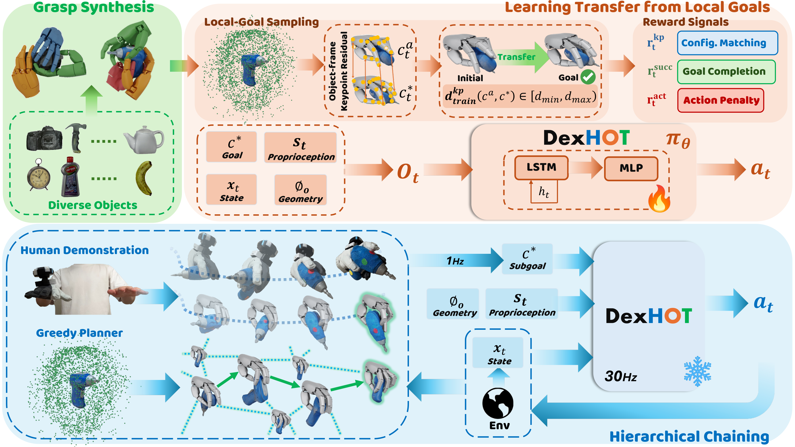

Object-pose goal only
2× speed✕ Failed example
Correct object pose. Barcode hidden.
The hand covers the code, so object orientation alone does not provide a scanner-compatible configuration.
1 CFCS, School of CS, PKU, China2 National Key Laboratory for Multimedia Information Processing, School of CS, PKU, China
3 PrimeBot4 State Key Laboratory of General Artificial Intelligence, BIGAI
Any source. Any target.Illustrated with the wrist held fixed.
Any hand–object configuration

Any hand–object configuration

Transfer between feasible hand–object arrangements, with each configuration jointly specifying:


Any2Any success averages close and far transfers. See how pairs are sampled and evaluated
Selected successful transfers · choose a source and target to play.
Seen-object examples
Unseen-object examples
Source and target hand–object configurations are uniformly sampled from each object’s validated pool, excluding near-duplicate pairs. The fingers drive the transfer with a fixed, palm-down wrist.

Seen objects
Unseen objects
From pickup onward: closed-loop finger control at 30 Hz, with target updates at 1 Hz.
The arm follows the demonstration-derived wrist motion; DexHOT controls the hand.

Frames progress from left to right. Cyan callouts enlarge the final visible Sharpa hand–object relationship for barcode scanning, shelf placement, block assembly, salt shaking, water pouring, and screw driving.
Rotate the bottle by 180° to present its barcode to the scanner with an unobstructed hand arrangement.
Tasks
The hand covers the code, so object orientation alone does not provide a scanner-compatible configuration.
The goal also specifies the finger arrangement, keeping the barcode visible to the scanner.
Original playback speeds retained; the two trials are not time-synchronized.

Method
A shared hand policy learns local transfers and reaches distant configurations through hierarchical chaining.
Build feasible hand–object configurations across diverse objects.
Train a shared policy with synthetic local-goal configuration pairs.
Compose long-horizon behavior using a planner or demonstrations.

Benchmark
120 objects. 1.2 million feasible configurations. A benchmark for hand–object configuration transfer.
The central Mollweide map shows object z-axis directions relative to the hand across all configuration pools; rotation about the object z-axis is omitted. Colors encode density percentile.
d is the mean Euclidean distance between 28 corresponding hand keypoints, measured in the object frame.
One metric jointly captures differences in:
Object position and orientation are relative to the wrist.
One drill. One fixed reference.
Explore how configurations differ.
Examples load when this section comes into view.
Object pose, camera and image scale stay fixed. Distance-selected examples—not transfer outcomes, including those within 20 mm.
Feasible hand articulation and wrist-relative object poses, generated for each object.
1,000 fixed pairs per object and distance range; each pair is attempted once.
Compare corresponding hand keypoints in the object frame using the same metric across all 120 objects.
Within the local-goal training band.
Extends beyond the training band.
Evaluates longer-range configuration changes.
Neighbor and close ranges overlap; their pair sets are sampled independently. Any2Any averages close and far only.
| Object split | Neighbor | Close | Far | Any2Any average |
|---|---|---|---|---|
| Seen objects | 90.9 | 85.5 | 75.6 | 80.5 |
| Unseen instances | 88.3 | 81.4 | 67.3 | 74.4 |
| Unseen categories | 81.5 | 72.2 | 56.7 | 64.4 |
Maintain this distance to the final target for 10 consecutive control steps.
Citation
@article{gui2026dexhot,
author = {Gui, Zhewei and Bolton, Anthony and Zhang, Jiyao and Chen, Zeyuan
and Yan, Qiyang and Wang, Tianyu and Dong, Hao},
title = {{DexHOT}: Learning Hand-Object Configuration Transfer for Dexterous Manipulation},
journal = {arXiv preprint arXiv:2611.05119},
year = {2026},
doi = {10.48550/arXiv.2611.05119},
url = {https://arxiv.org/abs/2611.05119},
}We thank Hangqi Zhou and Zihao Zhao for their assistance with the hardware, and Junhan Wang, Zimu Han and Yiming Zeng for their insightful discussions. This research was supported by the Beijing Natural Science Foundation (26L080330) and the National Natural Science Foundation of China (62376006).